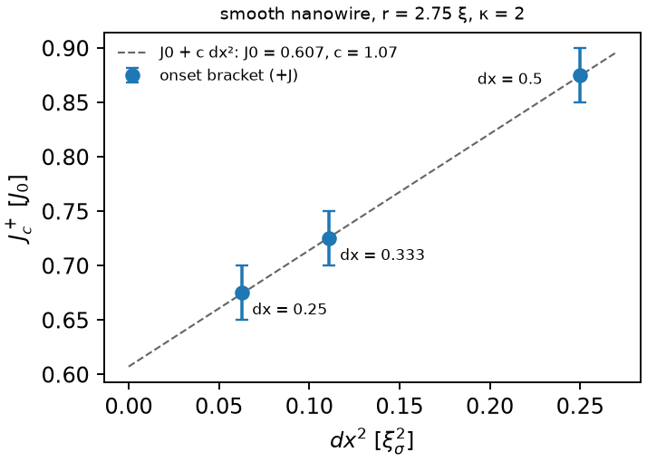

Validation
Why the numbers can be trusted, and where they stop.
The suite
Release 2.0 has about 600 tests and release 1.2 about 56 000. Both run on every push to the repository (GitHub Actions). The tests of release 2.0 run at a tolerance of 10−10 on any machine and to the bit with the Haswell kernels of OpenBLAS:
TDGL_TEST_BITS=1 OPENBLAS_NUM_THREADS=1 julia --project=tdgl2 tdgl2/test/run.jl # to the bit (x86 with AVX2)
OPENBLAS_NUM_THREADS=1 julia --project=julia julia/test/run.jl # release 1.2Against release 1.2
With the new terms off and the boundary of 1.x, release 2.0 reproduces release 1.2 state by state: the step, the masks, the
checkpoints, and a two-polarity ladder point by point. Release 1.2 in turn reproduces release 1.0.0, the code of the published
paper, to the digit (Config(:legacy) with mode = Strict()).
Against pyTDGL
For one band in two dimensions, against pyTDGL 0.9 (the one-band equation of this code with Γ = u, σn = 1, κ large):
- the depairing current of a narrow strip, 0.385 (pyTDGL's current unit is four times the GL unit);
- the conversion length with KWT for γ̃ = 0–30, within 0.2 % between the codes and 0.1 % from \( \lambda_c^2 = \sqrt{1+\tilde\gamma^2|\Psi|^2}/(u|\Psi|^2) \);
- the onset of a notched strip, independent of γ̃ in both codes. With the mesh it approaches pyTDGL's value: 8 % below it at dx = 0.5 ξ and 4 % at 0.25 ξ, the O(dx) error at the tip of the notch.
Exact and analytic limits
- Energy balance. The discrete dF/dt = −D + W holds, including the work of the boundary links.
- The time step. With the rotating frame the KWT state is the same to six digits at dt, dt/2, dt/4 and with explicit substeps.
- Three bands. With equal repulsive couplings the ground state breaks time reversal, with phases 0, ±2π/3 and |Ψ|² = 1 + |γ| (analytic), to 10−6.
- Symmetry. A mirror-symmetric sample gives η = 0 to machine precision, also with the open boundary.
- Normal fluids.
- In a long strip the σ share of the converted current follows the one-dimensional two-fluid law, to 0.004 with the insulating buffer.
- The N-fluid model with two bands is the two-fluid one to rounding.
- The solve of a sculpted sample satisfies its equation to 10−8.
- Materials.
- Two or three regions of the same material are the uniform run to the bit.
- The discrete continuity holds across an interface of different materials to 10−15.
- The proximity length into a normal or weaker material matches the lattice solution to 4 × 10−5.
- The normal state of a strip of two conductivities gives the series resistance.
- A run file with materials stops and resumes to the bit.
- Vortex counts. The sum of the plaquette windings over a plane equals the winding around its edge (the discrete Stokes theorem); it was checked on a field-cooled lattice of 35 vortices, on every plane and band.
Noise
- Decoupled nodes reach the mean, the variance and the correlation of the linear theory, with KWT too.
- The spatial covariance matches the linear theory of the lattice to 0.1–1 %.
- On the field, the energy of the free modes of a normal box is Σ(T̃/2)/(1 + λdt/2) to 0.03 %.
- With KWT on a lattice, the equilibrium ⟨|Ψ|²⟩ does not depend on the mobility, as the Gibbs measure requires: within 1.2 % of its value without KWT at T̃ = 10−3.
The mesh
A box with flat faces is resolved at dx = ξ/2: a finer mesh moves its onsets by less than the width of a bracket. A sample carved
in vacuum with a curved surface is not: its surface is a staircase of cells. The smooth nanowire of shapes/cable_x.toml
(radius 2.75 ξ, κ = 2, the insulating buffer) switches at 0.875, 0.725 and 0.675 J0 at dx = ξ/2, ξ/3 and ξ/4: the onset
converges as dx², to 0.61, so dx = ξ/2 puts it about 40 % high. With a V groove the onset is set by the groove and moves half as
much, and the efficiency keeps its sign: η = −1.5 % at ξ/2 and −0.8 % at ξ/3, with brackets that overlap. A carved shape is checked
at two meshes before an absolute onset is quoted.

Every option with the others
Every pair of options was run together on a small notched box:
- KWT, both integrators, the three boundaries, the insulating buffer, heat, drag, the normal fluids;
- anisotropic bands, noise on Ψ and on the field, materials, and samples carved in vacuum.
Every combination runs, except five that are refused with an explicit error, each for a stated reason (see what the model does not include). A combination that is refused never gives a result that looks right and is not.